Can one Midjourney image become a game-ready model that is faithfully the same object, not just "inspired by" it? This test case is a folded-paper Roman legionary, taken through two rounds and then broken into parts. Every pass is rendered from the reference camera, scored against the image, and logged.
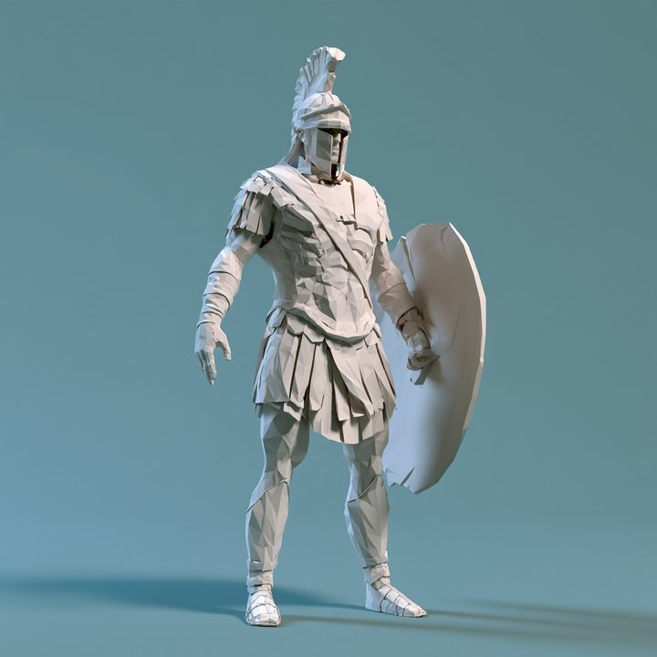
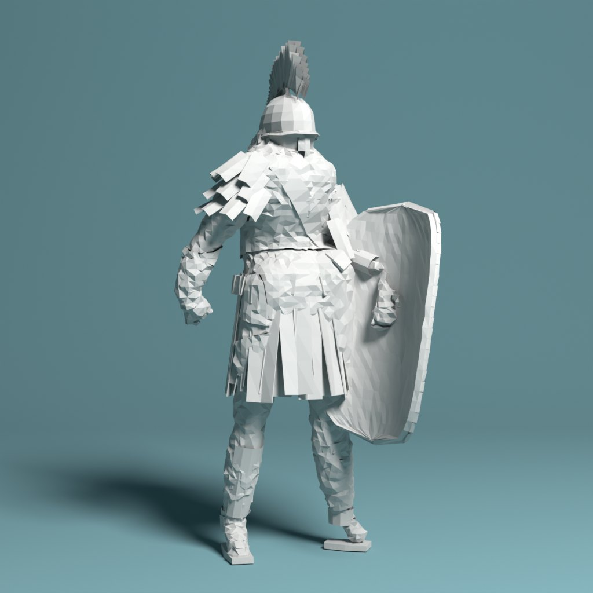
Where it stands: the silhouette, camera, pose and light match well, and round 2 made the figure read as paper rather than clay. It is still a close cousin of the reference, not the same model. A person notices four gaps first: the shield is a flat slab, the crest goes dark from behind, the skirt is thin strips instead of wide tabs, and the face plate is weak (it now has its own study). The props show that the parts approach works, and that each part needs a second round.
The first question was whether a loop could pull one exact model out of one picture. I wrote one parametric builder for an armoured humanoid, defined a loss against the image, and let an optimizer and three Claude models revise it. It found the pose, camera and light. It did not find the style: the surface came out as noise instead of folds. Round 2 is about that.
Every candidate is built by a Blender script from about 200 numbers, then scored against the reference at 256 px. The loss has five parts, each 0 when perfect:
0.35 × (1 − IoU) + 2.0 × outline distance + 0.2 × (1 − SSIM) + 0.2 × (1 − facet-edge correlation) + 0.6 × colour error
The silhouette comes from my own cut-out of your image. I fitted the teal backdrop as a smooth gradient and kept the pixels that differ from it, with a separate rule for the floor so the cast shadow doesn't count as the warrior. The quick inner loop scores only the silhouette, about 10 evaluations a second. Full scoring needs a Cycles render and takes 2 to 9 seconds.
Two attempts by the numeric optimizer, each fitting the camera, then the pose, then the shapes. Attempt A started with the body turned the way my first guess said, and it settled at 0.100. I looked at the render, saw that the crest was edge-on and the stance was mirrored, and restarted with the body turned the other way. Attempt B reached 0.069. No amount of tuning carried A across that gap on its own.
Each stage re-rendered at 512 px, LOD1, 32 samples, so the numbers compare fairly. Top row is the render. Bottom row is the silhouette overlay: white matches, blue is where the reference has warrior and the model doesn't, red is the reverse.
The same loop with three bundles. Each run starts from the camera-fitted template and gets 6 rounds. In each round the model sees the reference, the current render and the overlay, plus the loss history, and proposes parameter edits. An edit is kept only if the loss drops. Mid and high also run a numeric polish after each round. I ran every bundle twice: once with the plain prompt (v1), and once with a coarse-to-fine prompt I wrote after watching v1 fail (v2). Revisers ran through the Claude Code CLI, and cost is the CLI's own reported spend.
Three detail levels exported as GLB, each one mesh in one material: 1,449, 3,510 and 8,060 triangles. They're in the project files with provenance.json and the parameters that rebuild them. The turntable spins the figure under the fitted light. The back was never seen, so the back is a guess.
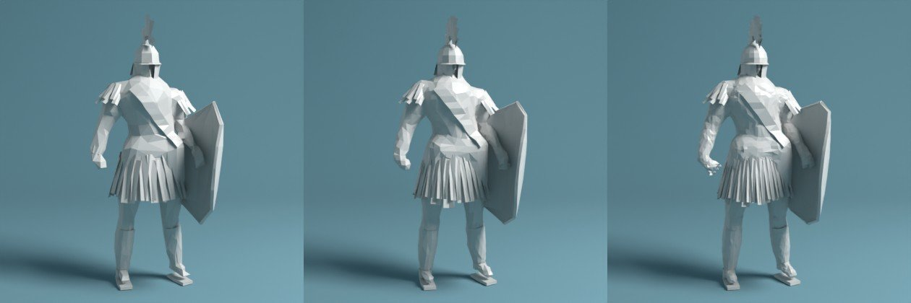
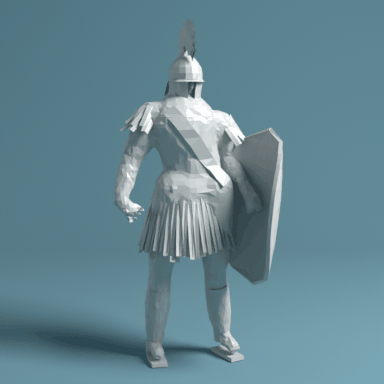
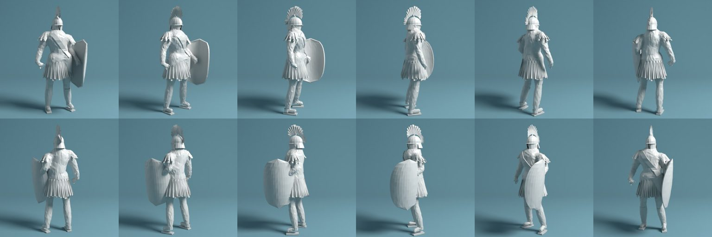
I didn't ask a model to write Blender code from scratch every round. I wrote one parametric builder for an armoured humanoid. The body is a metaball skeleton that gets decimated into flat facets. The helmet, crest, skirt strips, shoulder flaps, sash, greaves and shield are procedural paper pieces. That choice made the loop fast and the loss smooth enough to optimise, because every candidate is one JSON file. It also capped fidelity from the first minute. The loop can only reach shapes the builder can express. The reference's Corinthian-style face plate, its layered lorica tabs and its brushy crest aren't fully in the vocabulary, so no amount of revising could produce them.
Three of my own moves account for most of the drop. Restarting with the body turned the other way took the judged loss from 0.428 to 0.315. Fitting the lights, exposure and backdrop colour took it to 0.279. The final Opus pass took it to 0.267. In the dial runs, the language-model edits themselves were the smaller lever. Across the Sonnet and Opus runs, the model's accepted edits cut the loss by 0.007 to 0.037, and the numeric polish after each round cut it by 0.053 to 0.083. Haiku had no polish and earned all of its 0.04 itself, for three cents. Per dollar, the cheapest model was by far the most efficient reviser.
The detail pass is the clearest case of the loss not caring. Pectorals, abdominal plates, a nose, fingers, greaves, a raised sash, cheek guards, a wider crest and denser facets made the render visibly more like the reference, and the loss moved from 0.2794 to 0.2788. At 256 px those details are a few pixels each, and the silhouette and tone terms swamp them.
Fat limbs. When the pose was wrong, the silhouette optimizer covered the missing area by thickening arms and legs. The overlap went up and the warrior turned into a linebacker. Some of that bulk is still in the final torso.
Facing. After the restart, the silhouette matched well while the figure read as if seen from behind, because the helmet showed no face and the chest showed no sash. A silhouette can't tell front from back. Opus caught this in round 3 of the master run, in its own words: "the render reads as seen from behind or in rear three-quarter: no visor or face shows". It turned the body from 30° to 18°, which also lowered the loss. That was the only global correction any reviser made.
Paper versus clay. The best-scoring model, at 0.267, has strong per-vertex crumple. On the turntable it looks like wet clay or rock. Paper is a few large flat planes with crisp creases, not noise. I cut the crumple and the facet count for the final asset, and the loss rose to 0.278, because the facet-edge term rewards any high-frequency edges, real folds or not. I shipped the version that looks like paper and scores worse. That term needs replacing before it can be trusted.
Shiny paper and camera height. The lighting fit chose a glossier paper (roughness 0.44) because gloss bought contrast, and the reference is matte. The camera height wandered between 0.7 m and 1.6 m across fits with almost no change in loss, because a silhouette barely constrains it.
Haiku, low. It read the overlay precisely. It quoted pixel offsets, made five or six small edits a round, and got four or five of six accepted. It never looked past the overlay to ask whether the figure faced the right way, so it polished a wrong pose. It's good value for local cleanup and can't be trusted with the big picture.
Sonnet, mid. With v1 it bundled eight to ten edits a round, and four of six rounds were rejected. In round 5 it noticed the problem itself ("rounds 2 to 4 failed because they changed too many things at once"). With the v2 prompt it made smaller moves and finished best of all the dial runs, at 0.355 judged, for $0.40. Most of that gain came from the numeric polish it was paired with.
Opus, high. It gave the best diagnoses. It isolated variables on purpose ("this round only moves the shield, to test that change"), and it made the one global fix. It also cost about $0.15 to $0.35 a round, and in the dial runs most of its improvement came from the polish, not its edits. With the v2 prompt it finished at 0.383, worse than its own v1 run at 0.375 and worse than Sonnet v2. These are single runs, so the ordering of Sonnet and Opus here is within run-to-run noise, and I wouldn't rank them from it.
| Setting | What runs | Expected cost | Good for |
|---|---|---|---|
| Draft | Multi-start numeric fit, then Haiku × 6, LOD0 | ≈ $0.03, 3 min | Blocking out a prop or creature fast |
| Standard | Multi-start, Opus global read once, Haiku or Sonnet rounds with numeric polish | ≈ $0.40–0.60, 5 min | Most game assets |
| Hero | Standard, plus Opus writing new builder parts and acting as critic, plus multi-view targets | ≈ $2–5, 20 min | A character that has to match the art exactly |
Your read of round 1 was that the geometry was good but the art style didn't survive. Three things carry the look:
The bigger point was about architecture. Don't reconstruct the finished model; reconstruct the rules. That means a papercraft construction grammar that could turn any asset into this style, from a knight to a London street. A shader can't fake a folded silhouette, so the rules have to make geometry. You asked for three competing experiments (geometry-first, procedural papercraft and a hybrid) and bet on the hybrid.
You also asked whether the mesh is generated from scratch or optimised from an existing one. It is generated: every piece is Python in Blender, with no third-party mesh anywhere.
A loss that looks where you look. Loss v2 keeps the whole-figure terms and adds 512 px crops of the five parts you named (crest and helmet, shoulders, shield, skirt, legs and feet). Each crop is scored on overlap and structure. It also adds a style term that compares the distribution of edge strength and edge coherence inside the figure. Folded paper is mostly flat planes with a tail of strong, straight creases. Crumple noise is lots of medium, incoherent edges. That term lets the loss tell paper from clay, which round 1's edge term couldn't.
A grammar instead of a model. paper.py holds style rules that run on any mesh, whatever it depicts:
| Rule | What it does | Applied to |
|---|---|---|
facet | Re-triangulates to a target edge length, then crumples by a fraction of the local edge, so the paper reads the same at any scale or detail level | Body skin, trim |
bands | Cuts the surface with straight, tilted planes, splits it along the cuts and lifts alternate bands, so armour reads as overlapping paper strips with clean seams | Torso armour |
plates | Clusters faces into plates, flattens each one, folds a ridge down its middle and overlaps them like shingles | Tried on the torso, then switched off (see below) |
stiffen | Gives sheet parts paper thickness and a slight hand-made twist per piece | Skirt tabs, shoulder flaps |
| material | Matte paper: high roughness, a faint sheen and a tiny fibre bump. No fake folds in the shader. | Everything |
A, geometry-first: refit the plain builder with the part-crop loss and no grammar. B, procedural papercraft: keep round 1's geometry and run it through the grammar. C, hybrid: A's refitted geometry, then B's grammar. All three were judged on the same settings: loss v2, LOD2, 512 px, 48 samples.
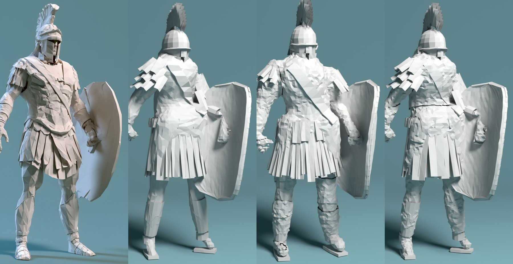
| Version | Judged total | Whole silhouette | Crest | Shoulders | Shield | Skirt | Legs | Style |
|---|---|---|---|---|---|---|---|---|
| Round 1 final | 0.447 | 0.148 | 84% | 88% | 88% | 93% | 72% | 0.49 |
| A · geometry-first | 0.365 | 0.105 | 86% | 93% | 92% | 96% | 83% | 0.35 |
| B · papercraft grammar | 0.319 | 0.172 | 83% | 87% | 86% | 91% | 70% | 0.09 |
| C · hybrid | 0.306 | 0.110 | 85% | 94% | 92% | 95% | 81% | 0.19 |
Lower is better for the total, the whole silhouette (1 − IoU) and style. The part columns are silhouette overlap inside each crop, where higher is better.
The numbers say what you predicted. Geometry alone fixes the silhouette but not the look. The grammar alone fixes the look and scores by far the most paper-like, but it sits on round 1's lumpier geometry, so it loses on every part crop. The hybrid keeps nearly all of A's silhouette and most of B's style, and wins overall.
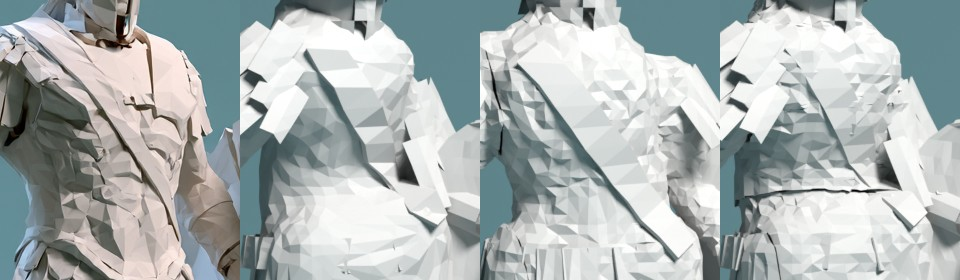
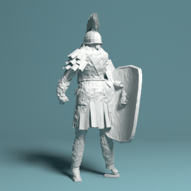
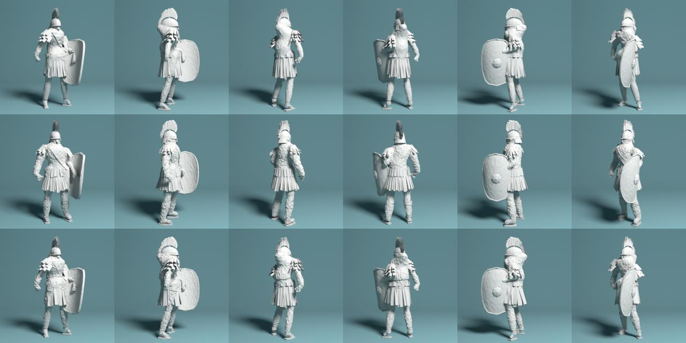
Separating style from shape was the right cut. Once the grammar was its own module, the style term could reward it independently of the silhouette, and the two could be combined without refitting. The part crops did what they were meant to. The shoulders went from 88% to 94% and the legs from 72% to 81%, changes a whole-figure loss had been too coarse to notice.
Clustered plates. My first plate rule grouped faces with k-means and folded each group. The groups follow the triangulation, so the seams came out ragged and stair-stepped, the opposite of a deliberate fold. I replaced it with straight-seam bands. Those are clean, but too subtle at this lift: from the reference camera they barely show.
The shield. It is still a thick slab with a rim. The reference shield is one smooth, curved oval sheet with crisp edge facets. The builder has no single-curved-sheet primitive, so no amount of fitting can reach it.
The crest. It's built from two layers of blades, and from behind the inner faces fall into shadow, so it reads as a dark brush. The reference crest is light from every side.
The skirt. It's many thin strips, where the reference has fewer, wider tabs that overlap. That's as much a parameter-range problem as a builder one.
The loss still prefers some crumple. Even with the style term, the best-scoring version carries more surface noise than I'd ship. The style term measures edge statistics, not whether the edges line up into folds. It judges better than round 1's term, but it isn't the final judge.
A style is a set of construction rules plus a vocabulary of primitives, and the primitives set the ceiling. The grammar can only make the shapes it is allowed to make: a curved sheet, a wide tab, a single-layer crest. The cheapest next win is adding those primitives, not more optimisation. That's also why splitting the character into parts is the right next move: each part needs only a small, specific vocabulary.
Your idea was piecemeal design: supply simpler props and make the character composable. Each part gets its own builder in the same paper grammar, its own reference image and loss, and a socket on the body. The helmet became a separate study because the face plate is the hardest single piece.
This is running separately, against your helmet image, with the face plate as the focus. Its results will be added here when it's done.
Each prop has its own builder:
The fit is round 2's recipe in miniature. It tries three camera turns, fits camera and shape on the silhouette for 300 steps, then fits light and paper over 20 renders. Every step goes into the same loss log, 1,610 evaluations in all.
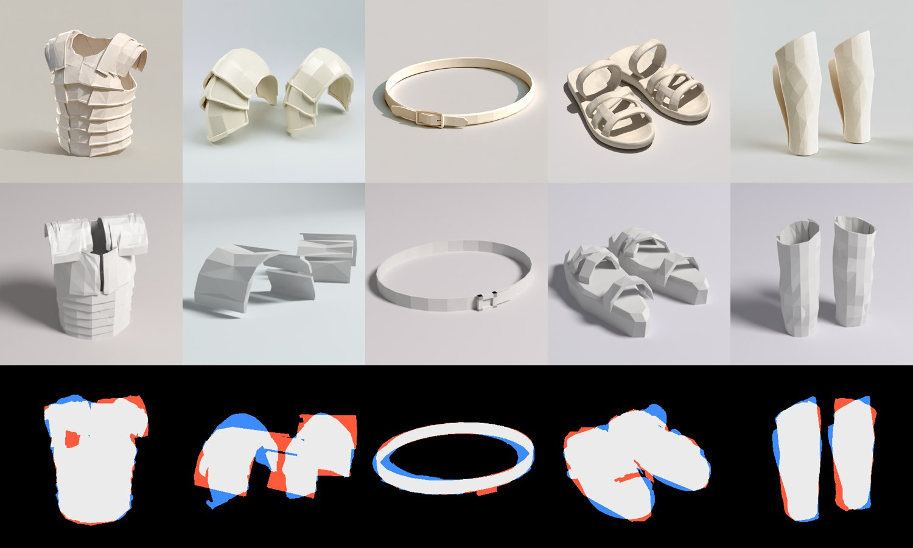
| Prop | Judged total | Silhouette | Style | Read by eye |
|---|---|---|---|---|
| Greaves | 0.205 | 0.150 | 0.12 | Closest. The shape and facet size are right. The back plate's edge doesn't show, and the colour should be cream. |
| Cuirass | 0.292 | 0.100 | 0.35 | Good outline and hoops. The chest plates split at the centre and the shoulder guards are too flat. The reference hoops are deeper and more stepped. |
| Sandals | 0.298 | 0.140 | 0.28 | Right layout, but the soles are too thick and the straps too chunky and crumpled. The reference straps are clean, smooth loops. |
| Belt | 0.314 | 0.223 | 0.55 | The ring is right, but it's too thin and tilted. The buckle is an H instead of a rectangle with a tongue, and the tail doesn't show. |
| Pauldrons | 0.317 | 0.286 | 0.19 | The weakest. The camera search picked a low side view and the plates came apart. The reference is three nested domes stacked down the arm. |
Small, specific builders fit fast: each prop took about six minutes with no model calls. Where the builder's vocabulary matches the object, as with the greaves and the cuirass, one pass gets close. Where it doesn't, as with the pauldrons' nested domes and the belt's buckle, the optimizer makes up for it by moving the camera. That's round 1's lesson again at a smaller scale. Two fixes follow. First, lock the camera to a sensible range for each prop. Second, use Opus once per prop to read the reference and choose the builder's structure before any fitting, the "spend the expensive model on judgement" idea from round 1.
The colour is also off on all five: your props are cream and mine are white. That's a one-line material change, held back so that all five can be refitted together.
The hybrid warrior is also exported as a kit. It has a body with named socket points (head, chest, waist, hands, shoulders, back, feet) and one GLB per part. Each part's origin sits at its socket, and every part is listed in kit.json with a hash. The props will snap onto these sockets next.
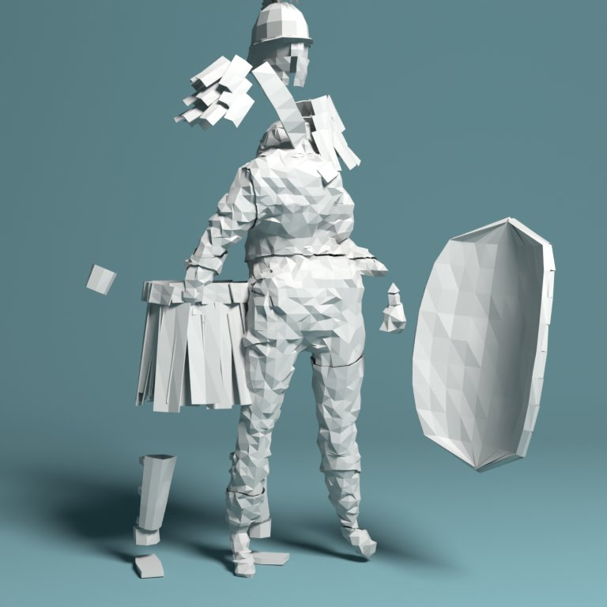
This applies to every round. All code, parameters, GLBs and logs are in the abbiesworld_ios repo under tools/paper-warrior.
| Field | Value |
|---|---|
| Reference | Evan's uploads: the warrior image, the helmet image and five prop images. Used only as loss targets and not copied into any asset. |
| Tool | Blender 5.2.3 LTS (bpy from PyPI), Cycles on CPU, run headless in a Claude Code cloud container |
| Generator | build.py: procedural metaball body and bmesh armour, the paper.py papercraft grammar and the props.py prop builders, all driven by JSON parameter files. No third-party meshes or textures. |
| Models | Claude Opus 5.5 wrote the builder, loss and loop, and chose the restarts. The master reviser was Opus 5.5 at high effort via claude -p, prompt v2. The dial runs used Haiku 5.5, Sonnet 5.5 and Opus 5.5. |
| Prompt | reviser.py (SYSTEM and V2 strings) plus schema.md |
| Date | 2026-10-22 |
| Grade | Study, not shippable. Hashes for every file are in provenance.json. |